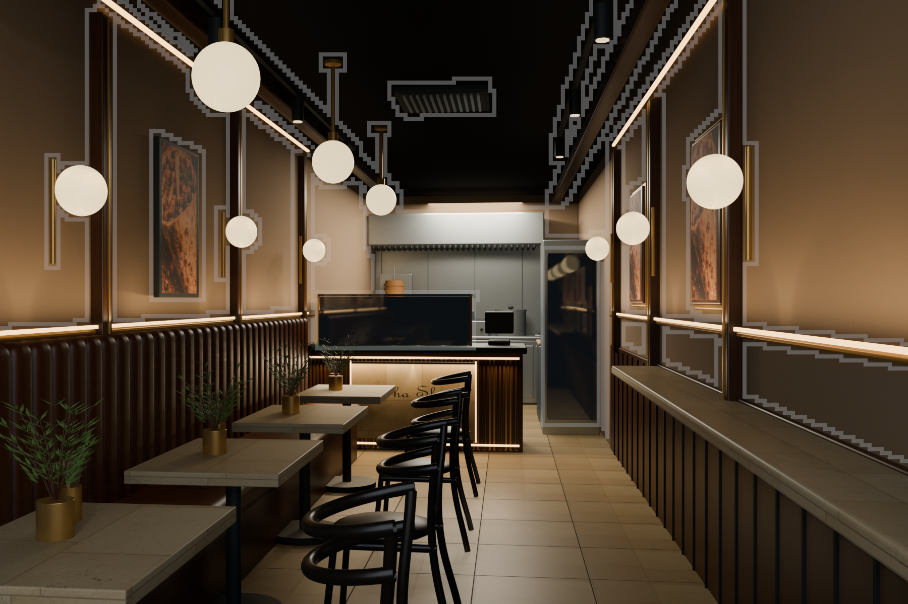
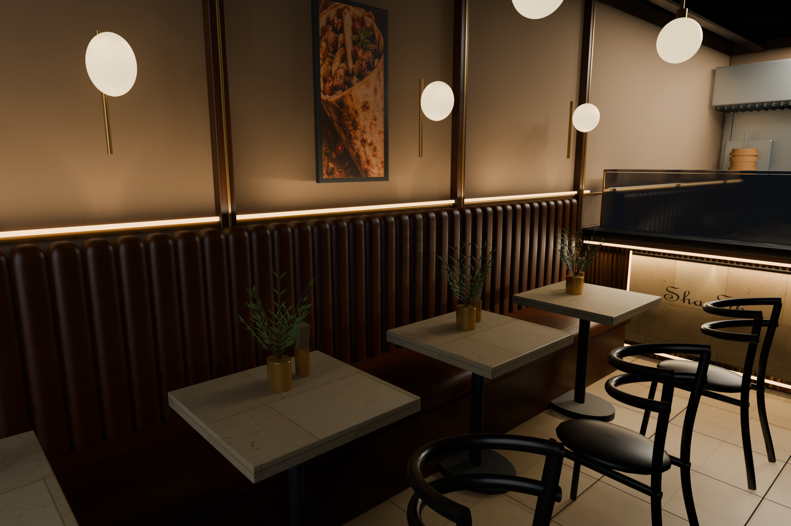

HERITAGE BISTRO / AN IMMERSIVE INTERIOR
Made to feel real.
Warm stone. Hand-finished walnut. Cognac leather.
Explore the room at eye level.

Step into Sha ShaLoading the A01 interior and scanned materials…
EXPLORE THE SPACE
01 / 05
The arrival.
A warm walnut frame and quiet brass lettering welcome you inside.
A01 STUDY
CONCEPT PLAN
Drag to look · WASD / arrows to walk
THE LIGHT, THE MATERIAL, THE ATMOSPHERE
A closer look at the interior.
Two views of the final A01 study, rendered on Intel Iris Xe with Blender Eevee.

THE HERITAGE PALETTE
Considered in every detail.
WalnutCognac leatherCream stoneAntique brass